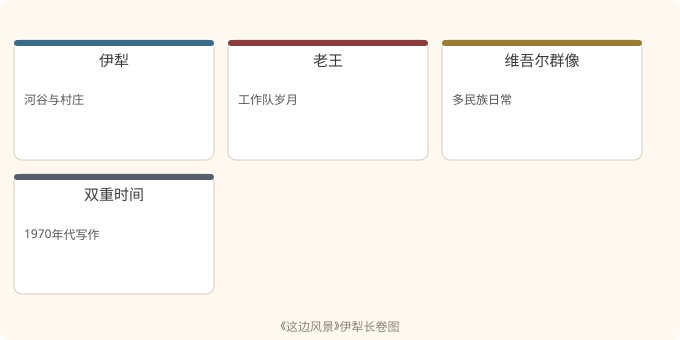

这边风景
一、基本信息
| 作者 | 王蒙 |
|---|---|
| 成书/出版 | 第九届茅盾文学奖获奖作品（中国作家网官方名单 C012：花城出版社；出版具体日期待核） 历届茅盾文学奖获奖作品一览（中国作家网）（官方文学机构） |
| 国别/地区 | 中国 |
| 时代 | 现当代 · 当代 |
| 体裁 | 长篇小说 |
| 语言 | 汉语（白话） |

《这边风景》伊犁长卷图（主题·结构图）
二、创作背景
中国作家网官方名单（C012）：第九届（2011—2014）茅盾文学奖获奖作品《这边风景》王蒙（花城出版社）。
特殊成书史：写作于1970年代、尘封多年后出版（通说待核）。
Britannica：战后中国文学的意识流实验以王蒙为代表——'exemplified in the stories of Wang Meng, with their stylistic experiments in stream of consciousness'（B233）。
三、内容脉络
伊犁地区农村工作队的岁月：老王（汉族干部）与维吾尔村庄（通说待核）。
伊犁风物与多民族日常（通说待核）。
四、主要人物表
| 人物 | 身份 | 说明 |
|---|---|---|
| 老王 | 农村干部 | 叙述核心（通说待核） |
| 雪林姑丽等 | 维吾尔村民 | 群像（通说待核） |
五、主题与艺术特点
- 多民族生活的百科长卷（通说待核）。
- 特定年代的写作与40年后出版的双重时间（通说）。
- 从意识流实验（Britannica）到乡土长卷的跨度（通说）。
六、影响与评论
- 中国作家网官方名单：第九届茅盾文学奖获奖作品、花城出版社（C012）。
历届茅盾文学奖获奖作品一览（中国作家网）（官方文学机构） - Britannica：'exemplified in the stories of Wang Meng, with their stylistic experiments in stream of consciousness'。
Wang Meng (Chinese writer) — Encyclopaedia Britannica（百科全书）
七、阅读建议
难点
- 维吾尔语借词与伊犁地名。
- 年代叙事与当代出版的语体差异。
- 《这边风景》（花城出版社，C012 官方名单口径）。
先读作者自序（成书史）再入正文。
八、待核实
- 主人公'老王'名与村名核对。
- 2012年花城出版社初版日期核对。
- '小说人'称谓（作者自创——通说）待核。
本页主要来源
王蒙的其他收录作品：这边风景